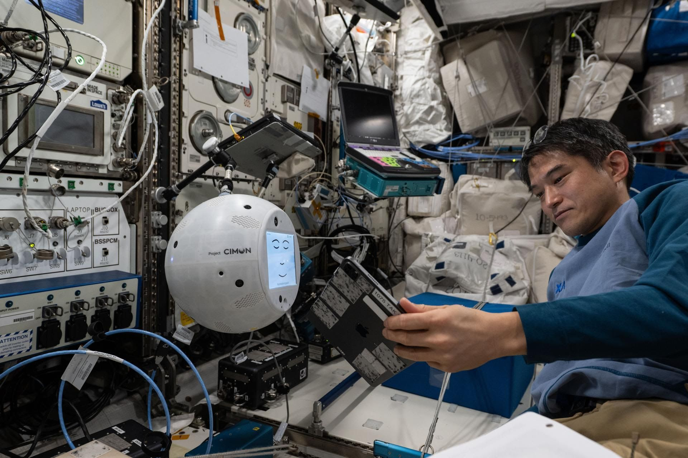

נאס"א בוחנת תמיכה של בינה מלאכותית לצוותי חלל במשימות ארוכות טווח 🛰️
פורסם במקור ב LinkedIn
נאס"א בוחנת תמיכה של בינה מלאכותית לצוותי חלל במשימות ארוכות טווח 🛰️
הוא לא אוכל, לא ישן, לא מתעייף ולא מבקש להחזיק יד. אבל הוא כן יודע לזהות פנים, להבין הוראות דיבור ולתפעל רחפן צילום בתוך מעבדת חלל. קוראים לו CIMON, והוא אולי הרמז הבהיר ביותר למה שצפוי לנו ביום שאחרי האוטומציה.
השבוע הופעל CIMON בתחנת החלל הבינלאומית על ידי האסטרונאוט טקויה אונישי, כחלק מפרויקט ניסוי יפני שבוחן את האפשרות לצוות תבוני שיעזור לאנשי הצוות האנושי במסעות ארוכים ומבודדים.
הרעיון פשוט רק לכאורה - אם נוכל ללמד מכונה להבין הוראות בזמן אמת, לזהות סיטואציות משתנות, ולכוון מכשירים אחרים על פי הקשר ולא רק על פי תכנות מראש, ייתכן שנוכל להוריד מהכתפיים של האסטרונאוטים חלק מהעומס הרגשי, הטכני והתפקודי.
אבל CIMON הוא לא רק ניסוי טכנולוגי אלא גם ניסוי רגשי. האם מכונה יכולה להקשיב לנו ולתמוך בלי לשפוט? זהו ניסוי באמון וגם בגבול. עד כמה נרצה להסתמך על יישות תבונית שלא באמת מרגישה אותנו אבל כן מסוגלת לעזור לנו להרגיש פחות לבד.
ייתכן שבעתיד הלא רחוק, בנסיעה איטית ומבודדת אל עבר כוכב אחר, שותף חכם שלא צריך שום דבר בתמורה יהיה לא רק נכס אלא תנאי קיום.
ומה שמתחיל כקיצור דרך תפעולי עלול להפוך לשותפות מסוג חדש - כזו שנשענת על טכנולוגיה כדי לחלץ משהו מהותי דווקא מן האנושי.
